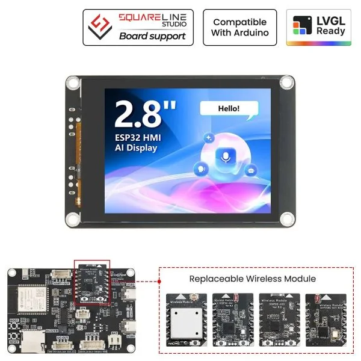

CrowPanel Advance 2.8"
Elecrow · Elecrow CrowPanel Advance 2.8" – ESP32-S3 N16R8 320×240 IPS capacitive
CrowPanel Advance 2.8" is a 2.8" 320x240 IPS Capacitive touch ESP32 display board by Elecrow based on the ESP32-S3 with 16MB flash, 8MB PSRAM.
Features, ports & interfaces
- Capacitive touch
- 8 MB PSRAM
- 16 MB flash
- microSD (TF) card slot
- Wi-Fi 4 (802.11 b/g/n, 2.4 GHz) – version from the ESP32-S3 datasheet
- Bluetooth 5 (LE) – version from the ESP32-S3 datasheet
- Serial port (UART): UART
- I2C
- Speaker port with audio amplifier
- Microphone (not usable together with SD card)
- Buzzer
- Battery charge management
- RTC clock
Specifications
| Parameter | Value | Source |
|---|---|---|
| Screen size | 2.8" | source |
| Resolution | 320x240 | source |
| Panel | IPS | source |
| Shape | Rectangular | |
| Display driver | ST7789 | source |
| Touch | Capacitive | source |
| MCU / SoC | ESP32-S3-WROOM-1-N16R8 (dual-core LX7, 240 MHz) | source |
| MCU family | ESP32-S3 | source |
| CPU frequency | 240 MHz | source |
| Flash | 16MB | source |
| PSRAM | 8MB | source |
| SRAM | 512KB | source |
| Wi-Fi | 2.4 GHz Wi-Fi 802.11 b/g/n | source |
| Bluetooth | Bluetooth 5.0 and BLE | source |
| USB | USB (USB-to-UART) | source |
| Category | Elecrow CrowPanel | |
| Brightness | 400 cd/m² (typ.) | source |
| Buzzer | Buzzer | source |
| Battery charger | Battery charge management | source |
| Connectivity | Optional replaceable wireless module (vendor): Zigbee / Thread / Matter (ESP32-H2), LoRa, nRF2401, Wi-Fi HaLow, Wi-Fi 6 | source |
| I2C port | I2C | source |
| Microphone | Microphone (not usable together with SD card) | source |
| RTC | RTC clock | source |
| SD / TF | SD card slot | source |
| Speaker interface | Speaker port with audio amplifier | source |
| Touch detail | Capacitive (single touch) | |
| UART port | UART | source |
| Vendor | Elecrow |